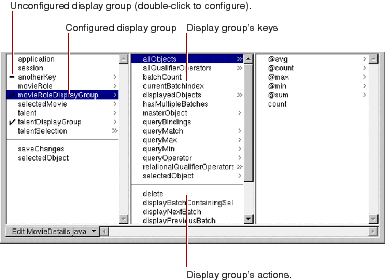
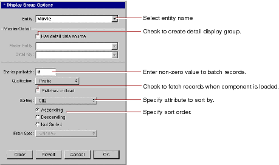

Working With Dynamic Elements
PATH
WebObjects 4.0 Documentation >
WebObjects Tools and Techniques
 Table of Contents
Table of Contents  Previous Section
Previous Section
Configuring the Display Group
A display group must be configured in order for it to be created and initialized automatically when the component is initialized. Display groups are instantiated from an archive file (with the extension .woo) that's stored in the component. You shouldn't edit .woo files by hand; they're maintained by WebObjects Builder.
In the object browser, means that the display group has been configured. A means that it has not been configured, and so the variable isn't automatically created. A configured display group shows its keys and actions in the second column of the object browser. You can bind them to elements in your program.

To configure a display group (or change its configuration), double-click its name to open the Display Group Options panel.

In this panel, you specify the following information:
Table of Contents  Next Section
Next Section